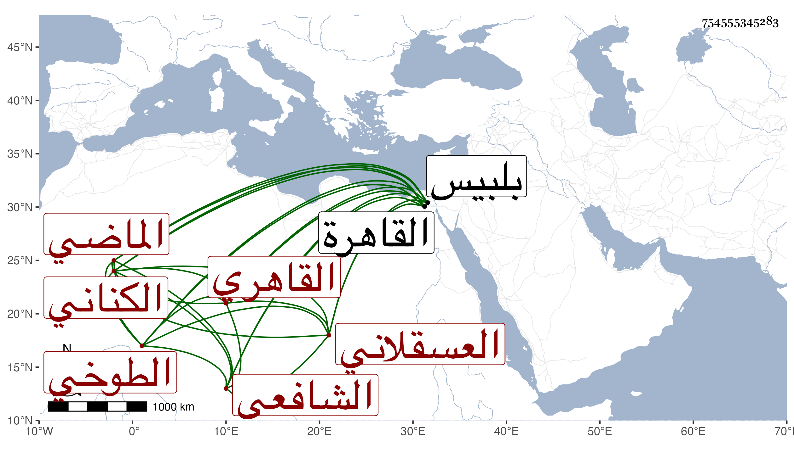

0902Sakhawi.DawLamic.ITO20230111-ara1.EIS1600.754555345283
Biography ID: 754555345283
176
محمد بن أحمد بن محمد بن محمد بن عثمان بن موسى بن علي بن شريك ابن شادي بن كنانة المحب بن الشهاب أبي العباس بن الشرف بن الظهير بن الفخر الكناني العسقلاني الطوخي الأصل طوخ بني مزيد القاهري الشافعي الماضي أبوه والآتي والده أبو السعود ويقال له السعودي لانتمائه لأبي السعود الواسطي ويعرف بالطوخي . ولد كما سمعه منه شيخنا في سنة أربع وسبعين وسبعمائة بالمدرسة الكهارية من القاهرة ونشأ بها فقرأ القرآن على أبيه والعمدة التنبيه والمنهاج الأصلي وألفية ابن ملك ، وعرض الكل على ابن الملقن والبلقيني والأبناسي والعراقي والدميري وأكمل الدين الحنفي في آخرين واشتغل في الفقه على الأبناسي والصدر الابشيطي وأبي الفتح البلقيني والعلاء الأقفاصي والشمس بن القطان وفي النحو علي الأبشيطي والبدر الزركشي وبحث منهاج الأصول على ابن الملقن مع شرحه له ولازم العز بن جماعة في فنونه حتى أخذ عنه الشعوذة ولم يسافر قط إلا إلى بلبيس ركبه دين فاختفى لأجله مدة سنين ثم ظهر في قالب الجذب وصار يستعير كل يوم شيئا يركبه وغالبه الخيل إما من الطواحين أو غيرها ثم يدور جميع نهاره وهو يقول الله الله الله ويسلم على الناس سلاما عاليا ثم يقول بسم الله والحمد الله وما شاء الله لاقوة إلا بالله أستغفر الله اللهم صل على سيدنا محمد وعلى آله وصحبه وسلم ، واستمر على ذلك مدة مديدة فصار الناس يعتقدونه . قال شيخنا بعد وصفه بكثرة الاشتغال وأنه مهر ثم ترك وتشاغل بالمباشرة عن كبير التجار البرهان المحلي إلى أن انكسر له عليه مال فضيق عليه فأظهر الجنون وتمادى به الحال حتى صار جدافا تخبل عقله وصار يمشي ويركب في الأسواق وبيده هراوة يقف ... فيذكر الله جهرا ويهلل ، ودام على ذلك أكثر من أربعين سنة بحيث كثر من يعتقده وفي بعض الأحيان يتراجع وينسخ بالأجرة ثم يعود لتلك الحالة انتهى . وربما أقرأ المماليك ببعض الطباق وبلغني أنه لم يكن يبرز من بيته غالبا إلا حين ينفد ما معه ، وقد رأيته كثيرا وسمعت تهليله وكان عليه أنس مع وضاءة وأحوال تؤذن بصلاح وناهيك بما أسلفت حكايته عنه في الأشراف قايتباي ، وكان شيخنا كثير المحبة فيه حافظا لعهده القديم ومرافقته السابقة له ، وله معه حكاية غاية في اتصاف شيخنا بالفتوة أوردتها في الجواهر ، ولم يزل المحب على حاله إلى أن سقط في بئر مدرسة الهكارية في يوم الخميس سادس رجب سنة اثنتين وخمسين فمات وصلى عليه ثم دفن ، وكان له مشهد حسن رحمه الله وإيانا .
